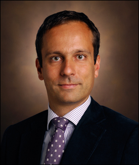
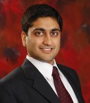

The Medical CPS workshop provides a forum for the presentation of research and development covering all aspects of High Confidence Medical Devices, Software, and Systems (HCMDSS), which is essential to support innovative, networked Medical Device (MD) systems to improve safety and efficiency in health care. The past five workshops have enjoyed a healthy participation of 35-40 attendees, and have provided a working forum for medical device specialists, including researchers, developers, and caregivers, from clinical environments, industry, research laboratories, academia, and government with the goal of advancing science, technology, and practice to overcome crucial issues with medical devices, software, and systems and challenges facing the design, manufacture, certification, and use of medical devices. This workshop features medical device and clinical experts from all over the world.
The topics to be covered in the workshop will range across all aspects of medical device software modeling and synthesis for safety, assurance, security and control, including but not limited to:
- High Confidence Medical Device Software Development & Assurance: Component-based methodologies; design and implementation, verification, validation and testing; robustness and fault-tolerance; system integration and interoperability of heterogeneous systems; closed-loop control; systems of systems; requirements solicitation and capture; clinical data management, and data security
- Modeling & Simulation of operational scenarios: modelling of failures in medical devices; caregivers, and patients behaviour modeling; high fidelity organ/patient models for design & testing; Pharmacokinetic and Pharmacodynamic (PK-PD) models; machine learning models
- Embedded, Real-Time, Networked HCMDSS: Architecture, platform, middleware, resource management, QoS (Quality of Service) in HCMDSS, dynamic interoperation in HCMDSS, including MD PnP (Plug-and-Play) operation, distributed control
- Enabling Technologies for Future Medical Devices: telemedicine, biosensor technologies, implantable devices, energy harvesting and remote powering devices, medical ultrasound systems, robotic surgery, physiologic signal QoS (Quality of Service)
- Medical practice: User-centric design; use & misuse of MD; risk understanding, and management of failures; medical guidelines and regulations
- Certification of HCMDSS and MD Interoperability: Regulatory fundamentals, laws, CE marking, FDA approval, pre-clinical testing, clinical evaluation, regulations applicability, incremental certification, role of design tools, approval of non-deterministic and self-adaptive MD systems
Important Dates
| February 14th, 2016 | Submission Deadline (Papers) | |
| March 15th, 2016 | Submission Deadline (Posters) | |
| March 1st, 2016 | Notification | |
| March 17th, 2016 | Camera Submission Due | |
| April 11th, 2016 | Workshop |
Call for Papers
Call for papers [pdf]
Authors are invited to submit papers by February 14th, 2016 (short papers 4-6 pages, full papers 8 -10 pages) and posters by March 15th, 2016.
Submit your papers via EasyChair - https://easychair.org/conferences/?conf=medicalcps2016
Authors should prepare their papers using LaTeX and the ACM style file. Submissions must be original and should not have been published previously or be under consideration for publication while being evaluated for this workshop.
Accepted papers will be published in the SIGBED Review newsletter (indexed also in DBLP and Scopus). By submitting to the workshop the authors are granting permission for ACM to publish in print and digital formats for the newsletter and the ACM archive. Note that the copyright remains with authors.
Invited Speakers
- Stefan Schlichting, Dräger Safety MSI Gmb, Germany
- Scott. A. Smolka, Stony Brook University, USA
- Pietro Valdastri, Vanderbilt University, USA
Morning Keynote: Lifesaving Capsule Robots
Pietro Valdastri, Vanderbilt University, USA

The talk will move from capsule robots for gastrointestinal endoscopy toward a new generation of surgical robots and devices, having a relevant reduction in invasiveness as the main driver for innovation. Wireless capsule endoscopy has already been extremely helpful for the diagnosis of diseases in the small intestine. Specific wireless capsule endoscopes have been proposed for colon inspection, but have never reached the diagnostic accuracy of standard colonoscopy. In the first part of the talk, we will discuss enabling technologies that have the potential to transform colonoscopy and gastroscopy. These technologies include magnetic manipulation of capsule endoscopes, water jet propulsion, real-time pose tracking, and intermagnetic force measurement. The second part of the talk will give an overview about the development of novel robotic solutions for single incision robotic surgery. In particular, a novel surgical robotic platform based on local magnetic actuation will be presented as a possible approach to further minimize access trauma. The final part of the talk will introduce an open-source component-based design environment for capsule robots that aims at facilitating researchers in the field in exploring novel concepts and reducing the time to achieve a functional prototype.
Short Bio: Dr. Valdastri is currently Assistant Professor of Mechanical Engineering, with secondary appointments in the Electrical Engineering Department and in the Division of Gastroenterology, Hepatology and Nutrition at Vanderbilt University Medical Center. He is the founder and director of the Science and Technologies Of Robotics in Medicine (STORM) Lab, a standing member of the Vanderbilt Institutional Review Board, a Senior Member of IEEE, one of the Editors of IEEE ICRA from 2016 to 2018, and Associate Editor of the Journal of Medical Robotics Research. His current research – focusing on capsule robots for gastrointestinal endoscopy and abdominal surgery – is funded by the National Science Foundation, the Broad Foundation, and the National Institute of Health. Dr. Valdastri is co-author of more than 70 peer-reviewed journal publications, co-inventor of more than 30 patents and patent applications, co-founder of a successful medical start-up (WinMedical, www.winmedical.com), and the recipient of several prestigious awards in the field of medical robotics, including the NSF CAREER Award in 2015, the Sensys 2014 Best Paper Award, the OLYMPUS Best Laparoscopy/Robotic Paper Award 2013, the OLYMPUS ISCAS Best Paper Award 2012, the ASME Design of Medical Devices Conference Best Paper Award 2012, the Hamlyn Symposium on Medical Robotics Best Oral Presentation Award 2011, and the European Association of Endoscopic Surgery Best Technology Presentation Award 2011.
Afternoon Keynote: Interoperability of Medical Devices in Acute Care
Stefan Schlichting, Drägerwerk AG & Co. KGaA (Lübeck, Germany)

Over the past years, IHE has developed a number of profiles for the acute care area in hospitals. They reach from the communication of physiological measures and device settings to alarms and service information in enterprise IT systems. The missing puzzle piece to this point was the communication and bi-directional control of medical devices between each other. Synchronized with the development of the IEEE 11073 standard for the connectivity between medical devices in acute car, the respective IHE profiles are under development. This presentation talks about the relevance and potential use cases of these advancements for hospitals, caregivers and the device vendors as well as patients.
Short Bio: Dr. Stefan Schlichting is working as a system architect forDrägerwerk AG & Co. KGaA (Lübeck, Germany) on interoperability of medical devices and systems. In this context he represents Dräger also in multiple national and international standardization committees and organizations. Prior to joining Dräger in 2009, Stefan was a computer consultant and also a PhD student at the Department of Surgery of the University Hospital Schleswig-Holstein (Lübeck, Germany), where he conducted research on computer-assisted surgery.
Dissemination Talk: CyberCardia: Compositional, Approximate, and Quantitative Reasoning for Medical Cyber-Physical Systems
Rahul Mangharam, UPenn, (USA)
The CyberCardia project is part of the NSF’s initiative to advance the state-of-the-art in Cyber-Physical Systems (CPS): engineered systems that are built from, and depend upon, the seamless integration of computation and physical components. The goal of this project is to develop far more realistic cardiac device models and controllers than the ones that currently exist. The CyberCardia platform will provide a basis to test and validate medical devices faster and at a far lower cost than existing methods. It will also provide a platform for designing optimal, patient-specific device therapies, thereby lowering the risk to the patient. CyberCardia includes collaborators from seven leading universities a nd centers CMU, RIT, UM, GTech, UPenn, FC-ESE, SBU, TUW and FDA.
Short Bio: Rahul Mangharam is an Associate Professor in the Dept. of Electrical & Systems Engineering and Dept. of Computer & Information Science at the University of Pennsylvania. He directs mLAB: Real-Time and Embedded Systems Lab and xLAB: Experience Design and Technology Lab at Penn. His interests are in real-time scheduling algorithms for networked embedded systems with applications in medical devices, energy efficient buildings, automotive systems and industrial wireless control networks. He received his Ph.D. in Electrical & Computer Engineering from Carnegie Mellon University where he also received his MS and BS in 2007, 2002 and 2000 respectively. He has worked on ASIC chip design at FORE Systems (1999) and Gigabit Ethernet at Apple Computer Inc. (2000). In 2002, he was a member of technical staff in the Ultra-Wide Band Wireless Group at Intel Labs. He was an international scholar in the Wireless Systems Group at IMEC, Belgium in 2003. Rahul received the 2014 IEEE Benjamin Franklin Key Award from the IEEE Philadelphia Section, 2013 NSF CAREER Award, 2012 Intel Early Faculty Career Award and was selected by the National Academy of Engineering for the 2012 US Frontiers of Engineering. He was the Stephen J. Angelo Term Chair Assistant Professor at the University of Pennsylvania from 2008-2013.
Workshop Co-Chairs
This year’s workshop will be hosted by:
- Ezio Bartocci, TU Wien, Austria
- Martin Leucker, University of Lübeck, Germany
Program Committee
- David Arney, University of Pennsylvania, USA
- Ezio Bartocci, TU Wien, Austria
- Marco Beccani, University of Pennsylvania, USA
- Luca Bortolussi, University of Trieste, Italy
- Flavio H. Fenton, Georgia Institute of Technology, USA
- Martin Leucker, University of Lübeck, Germany
- Philip T Moore, Lanzhou University, China
- Nicola Paoletti, University of Oxford, UK
- Guido Sanguinetti, University of Edinburgh, UK
- Scott. A. Smolka, Stony Brook University, USA
- Oleg Sokolsky, University of Pennsylvania, USA
- Volker Turau, Hamburg Universtity of Technology, Germany
- Pietro Valdastri, Vanderbilt University, USA
- Krishna Venkatasubramanian, Worcester Polytechnic Institute, USA
Steering Committee
The workshop will be advised by the following steering committee members:
- Julian M. Goldman, Massachusetts General Hospital/Harvard Medical School, USA
- Paul Jones, Food and Drug Administration, USA
- Insup Lee, University of Pennsylvania, USA
- Sandy Weininger, Food and Drug Administration, USA